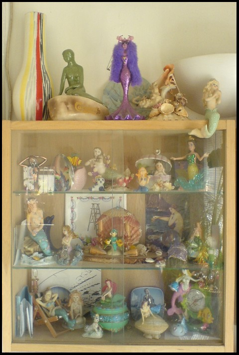

Friday, May the 8th, 2009
back to: title, date or indexes
You will be pleased to hear that I have been indefatigable, over the last couple of days, in my mermaid research. In a bunker deep underground, I was able to view several hours of footage from various demonstrations, hoping to spot a committed member of the social justice movement, in other words a mermaid, being clubbed senseless, possibly even to death, by a brutish copper or two. Well, when I say that is what I was hoping to see, I do not mean that I was excited by the prospect of watching a semiaquatic being being roughed up by the forces of law and order, rather if that is what I did see it would confirm mermaids' status as committed members of the social justice movement. Are you still with me? This isn't particularly complicated stuff, but I am having some difficulty explaining myself. Though I must say it was fun to write a grammatically correct sentence containing two adjacent “being”s. Anyway, to my infinite regret the footage was shaky and blurry and I couldn't make anything out in detail, so I am still unable to reach a definitive mermaid conclusion. What I do have, courtesy of OSM, is a photograph of a gathering of mermaids, perhaps protesting in favour of world peace or against capitalism. Neither George Galloway nor Annie Lennox, say, is visible in the picture, so it's hard to be sure what exactly the mermaids are making a fuss about. Careful study of the photo will be necessary, through a microscope, which I shall have to borrow from my next door neighbour, a somewhat perplexing individual with cake-crumbs in his beard. He is often reluctant to respond to my urgent hammerings at his door, so please be patient and I will return to this important topic when I have something concrete to report.
